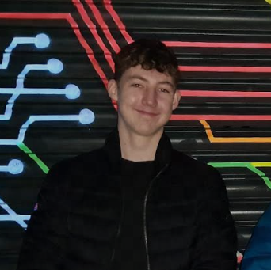

Jamie Wells

The official portfolio of Jamie Wells.
This website was entirely built by Jamie Wells using HTML and CSS.
I am currently writing this at 17 years old, I am about to finish my first year of sixth form, studying Maths, Physics, and Spanish,
and have recently started to learn full-stack web development.
Past Projects
Web Development on Wix
View the UI/UX of the website here.
Spanish Course Development on LearnWorlds
You can visit the site here.
Work Experience
As of writing this, I have worked at Warner Brothers' Studios as a General Assistant for almost a year, and have massively developed my customer
service and relations. I have received multiple 'shoutouts' from customers due to high quality service and attitude to work.
Interests and Skills
- Web Development and Web Design
- Business and Entrepreneurship
- Language Learning
- Indoor Climbing